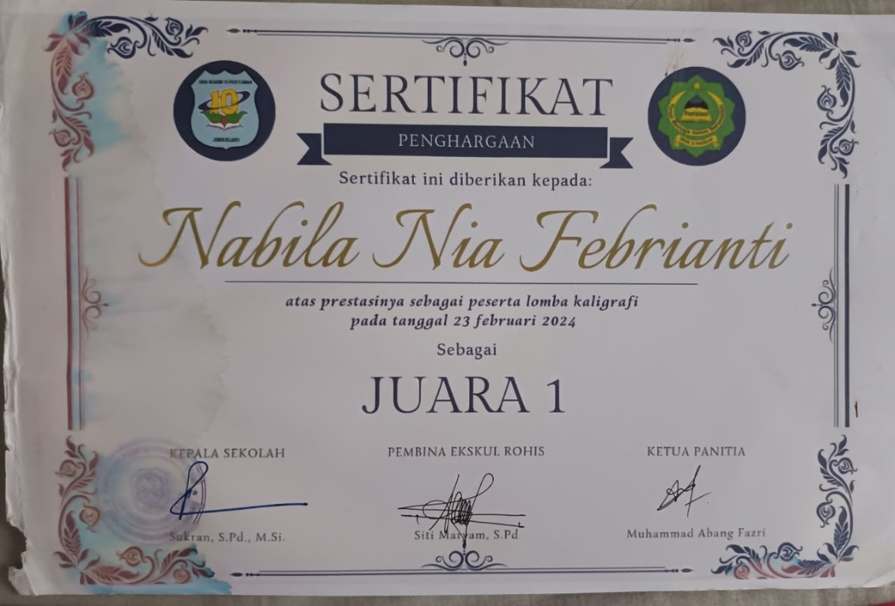
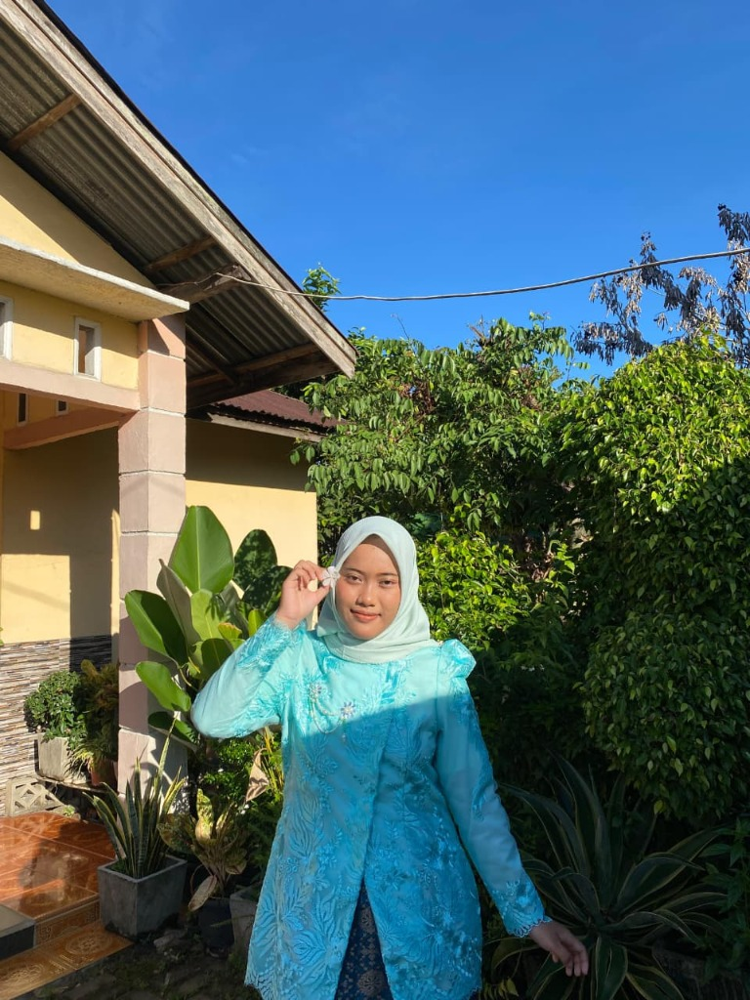

Sertifikat
Juara 1 Lomba Kaligrafi
Sertifikat penghargaan lomba kaligrafi yang diselenggarakan pada 23 Februari 2024.
Mahasiswa Sistem Informasi Antusias Web Programming
Senang mengeksplorasi ide kreatif dan mengembangkannya menjadi karya digital

Belajar Hal Baru, Merangkai Cerita.
Hai, aku Nabila Nia Febrianti, mahasiswa Sistem Informasi yang tertarik pada dunia web programming. Aku senang mempelajari teknologi dan mengembangkan ide menjadi website yang menarik dan bermanfaat Saat ini aku sedang belajar HTML dan JavaScript Di luar itu, aku menikmati menonton movie dan belajar bermain gitar, serta mencari inspirasi dari hal-hal sederhana di sekitar.
Bagi aku, merancang website dan aplikasi seperti menyelami lautan: selalu ada hal baru untuk dieksplorasi, mulai dari arsitektur informasi, interaksi visual, hingga performa kode yang optimal.
Setiap pengalaman punya cerita dan setiap langkah menjadi bagian dari proses berkembang.
Sekarang lagi menjalani semester awal di Sistem Informasi. Di sini aku mulai belajar tentang pemrograman, sistem informasi, analisis sistem, dan berbagai hal yang berhubungan dengan teknologi.
Selama menempuh pendidikan di SMAN 10 Pontianak, saya pernah mengikuti kegiatan ekstrakurikuler seni tari sebagai salah satu cara untuk mengembangkan minat dan bakat di bidang seni. Melalui kegiatan ini, saya belajar mengenal berbagai gerakan tari, melatih ketepatan gerakan, serta meningkatkan kedisiplinan dan rasa percaya diri. Saya juga belajar pentingnya kerja sama, kekompakkan, dan tanggung jawabdalam mengikuti setiap latihan bersama anggota lain.
Dari lomba kaligrafi, aku belajar lebih sabar, teliti, dan rapi dalam membuat karya. Sedangkan dari lomba poster, aku belajar menuangkan ide lewat desain dan mengatur warna, tulisan, serta elemen agar terlihat menarik. Buatku, pengalaman ini bukan cuma soal menang atau kalah, tapi juga tentang berani mencoba dan mengembangkan kemampuan yang aku punya.
Masa sekolah yang jadi awal aku mencoba banyak hal, mulai dari kegiatan sekolah, desain grafis, sampai ikut berbagai perlombaan. Dari sini aku mulai tertarik untuk terus belajar dan mengembangkan kemampuan.
Kumpulan karya desain UI/UX, prototipe aplikasi, dan pengembangan web yang pernah aku rancang dengan teliti.
 Web Development
Web Development
Aplikasi dashboard web interaktif untuk memantau suhu laut, tingkat kejernihan air, dan data konservasi ekosistem terumbu karang secara real-time.
 UI/UX Design
UI/UX Design
Desain prototipe aplikasi mobile edukasi biota laut untuk anak sekolah dengan gamifikasi kuis, ilustrasi 3D laut, dan modul pembelajaran interaktif.
 UI/UX Design
UI/UX Design
Studi kasus UX perancangan aplikasi pemesanan tiket diving & snorkeling ramah lingkungan dengan fitur jejak karbon dan donasi pelestarian laut.
 Web Development
Web Development
Pengembangan sistem informasi terpadu kegiatan mahasiswa dengan fitur manajemen jadwal, pengumuman ormawa, dan formulir pendaftaran kegiatan online.
 Web Development
Web Development
Toko daring ramah lingkungan dengan antarmuka segar, keranjang belanja dinamis, filter kategori pintar, serta integrasi simulasi kalkulator ongkos kirim.
 Desain & Branding
Desain & Branding
Perancangan logo, panduan palet warna, tipografi, dan template media sosial untuk kampanye pelestarian ekosistem pesisir generasi muda.

Sertifikat penghargaan lomba kaligrafi yang diselenggarakan pada 23 Februari 2024.
Tempat untuk menambahkan sertifikat berorientasi potret.
Pilih karya untuk melihat detailnya.
Ini adalah beberapa ringkasan materi selama aku mengikuti kegiatan PARTISI
Ringkasan materi PARTISI 1 yang membahas pengenalan dan organisasi HMSI, budaya kampus dan etika mahasiswa, serta esensi pengkaderan mahasiswa Sistem Informasi
Pembahasan teknik public speaking, komunikasi efektif, pengembangan diri, pengenalan potensi, serta pentingnya menjaga kesehatan mental bagi mahasiswa
Ayo kita belajar, bercerita, dan berkolaborasi barengg!!!!
Aku selalu antusias menyambut kolaborasi di bidang pembuatan web, desain antarmuka pengguna, maupun proyek digital lainnya.
"Seperti ombak yang konsisten membentuk karang, dedikasi dan ketekunan melahirkan karya terbaik."